Content checked against the exported Desktop screenshots (the Figma text API limit was reached for this module).
1. Module summary
- Leave a Review: after a completed stay/activity, the guest rates it overall and by category, writes a review, and submits it. Reviews then appear on the listing (module 05).
- Favorites / Wishlist: the guest's saved stays, activities (and POIs), filterable by category, with quick booking and one-tap remove; an empty state invites exploring.
2. Business requirements covered (SRS)
| ID | Requirement | Priority | MVP | Where |
|---|---|---|---|---|
| FR-6.1 | Rating (1–5) and written review after a completed booking | High | MVP ✓ | Leave a Review |
| FR-6.2 | Attach photos to a review | Low | Later | Photo uploader is in the design — §7 G1 |
| FR-6.3 | Provider responds publicly | Medium | Later | (display in module 05) |
| FR-6.4 | AI sentiment scoring & moderation flagging | Medium | Later | — |
| FR-7.1 | Save properties/activities to favourites | Medium | MVP ✓ | Hearts everywhere + Favorites screen |
| FR-7.2 | Remove items from favourites | Medium | MVP ✓ | Filled heart on each card |
3. Screen inventory
| # | Screen | States | Breakpoints |
|---|---|---|---|
| 4.1 | Leave a Review | Default | All 4 |
| 4.2 | Favorites / Wishlist | Default · Empty state | All 4 |
4. Screen specifications
4.1 Leave a Review
Entry: My Bookings → Past Stays → booking → Leave a Review; review-prompt notification (module 09). Exit: submit → back to My Bookings with "Review submitted"; Save Draft; Cancel.
Default
 Open in Figma · 42:17849
Open in Figma · 42:17849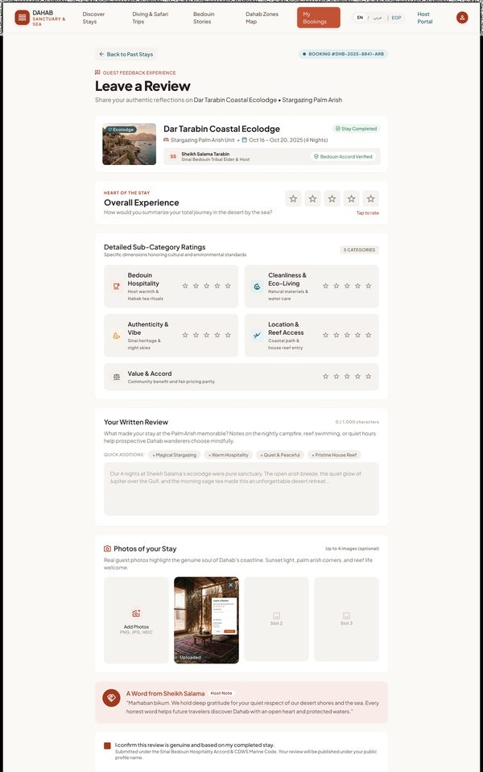
Open in Figma · 42:17369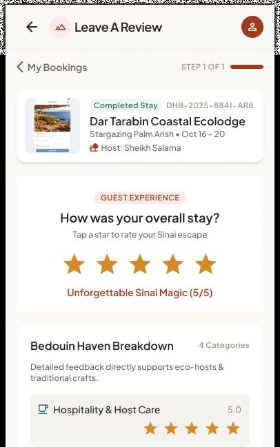
Open in Figma · 42:17104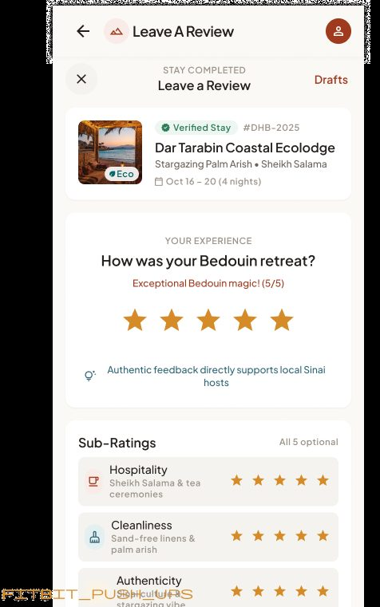
Open in Figma · 42:16795UI elements
| Element | Content | Behaviour / rule |
|---|---|---|
| Stay reference | "GUEST SANCTUARY EVALUATION", BOOKING REFERENCE DHB-2025-8841-ARB; card "Dar Tarabin Coastal Ecolodge — Stargazing Palm Arish • Oct 16 – Oct 20, 2025 (4 nights) — Hosted by Sheikh Salama Tarabin & Family" + Verified Stay; sidebar host card with quote, check-in/out times and lodging format | Only for the guest's own completed booking. |
| Back link | "← Back to My Bookings / Past Stays" | — |
| Overall experience | 5-star selector, scale labels "1 = Disappointing · 3 = Balanced · 5 = Exceptional & Transformative", live label "Exceptional (5.0)" | Required. |
| Category ratings (stays) | Bedouin Hospitality & Host Warmth · Cleanliness & Eco-Living · Authenticity & Heritage Vibe · Location & Reef/Mountain Access · Value & Ethical Accord | Stars 1–5 each; required or optional (decide). Must match the categories displayed on Reviews Expanded (module 05 — see §7 G3). |
| Written review "Your Review & Stories" | Text area, counter "0 / 1,000 characters (min 20)", note "Verified Guest Review • Protected under Bedouin Heritage Guidelines" | Min 20, max 1,000 characters. |
| Quick tag chips "TAP TO ADD HIGHLIGHTS" | + Incredible Stargazing · + Authentic Bedouin Majlis · + Pristine Reef Access · + Welcoming Sheikh Salama · + Eco-Friendly Solar Living · + Fresh Morning Habaq Tea | Tap inserts the phrase into the text (or stores tags). |
| "Add Visual Memories (Optional)" | Drop zone "Drop photos here or browse", max 6 photos, JPG/PNG up to 10 MB each, previews with ✕, counter "2 / 6 added" | FR-6.2 is Later — see §7 G1. |
| Consent checkboxes | ☑ "Post review publicly with my verified profile" (shows first name + initial, e.g. "Elena M.") · ☑ "I confirm this review reflects my genuine stay under the Sinai Bedouin Hospitality Accord" | Genuine-stay confirmation required; public-profile optional. |
| Side panels | "Guidelines for Helpful Reviews" (eco-realities, tribal tradition, practical dive & reef tips) · "Need assistance? Contact Dahab Sanctuary Concierge — Chat" · "Community impact 88%" | Static help content. |
| Actions | Submit Review → · Save Draft; note "Your submission is encrypted and published following host moderation within 24h." | Submit disabled until required fields valid. |
Step-by-step
| # | Guest does | System does |
|---|---|---|
| 1 | Opens from a past booking | Checks booking is completed and not yet reviewed; loads form. |
| 2 | Picks overall and category stars | — |
| 3 | Writes review / taps quick tags | Counter updates; min-length indicator turns green when met. |
| 4 | (Optional) adds photos | Uploads with progress (if FR-6.2 in scope). |
| 5 | Ticks "I confirm this review reflects my genuine stay…" (and optionally "Post publicly") | Enables Submit. |
| 6 | Taps Submit Review | Saves review linked to booking, listing, provider; recalculates listing averages; publishes (or queues for moderation — decide); thanks message; booking shows "Reviewed". |
| 7 | Taps Save Draft | Stores draft; resumes later. |
4.2 Favorites / Wishlist
Entry: Saved tab (native/mobile), header "Saved" (count badge). Exit: listing detail, booking flows, Discovery Home (empty state).
Default
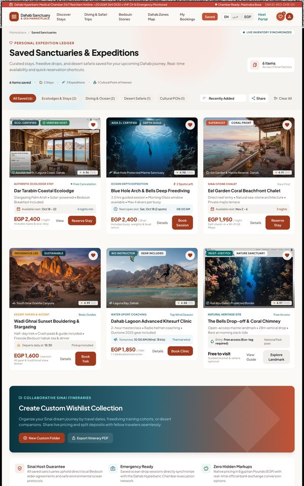
Open in Figma · 42:20169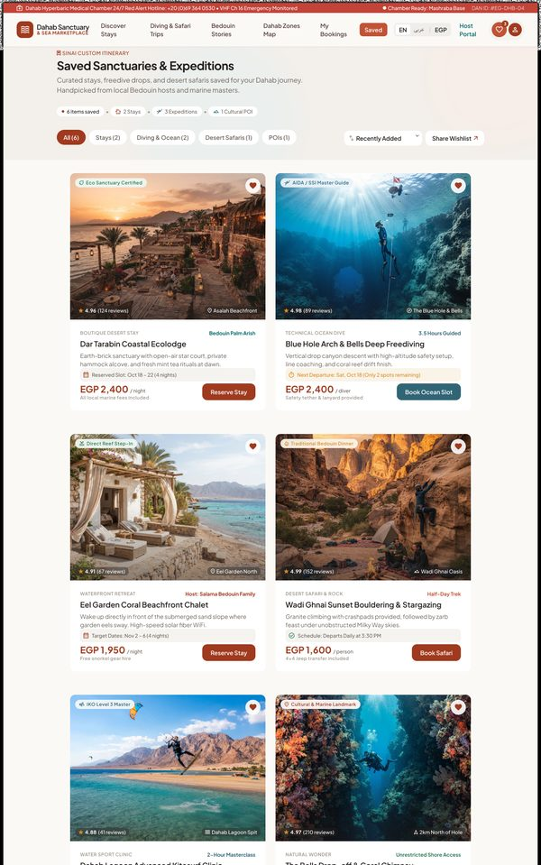
Open in Figma · 42:19341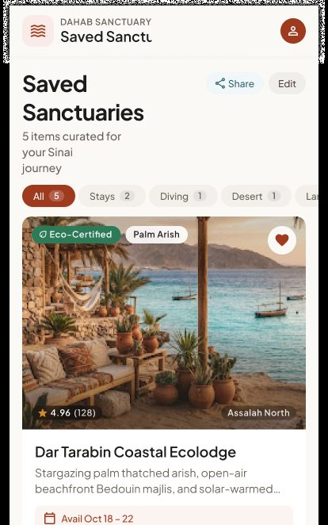
Open in Figma · 42:18890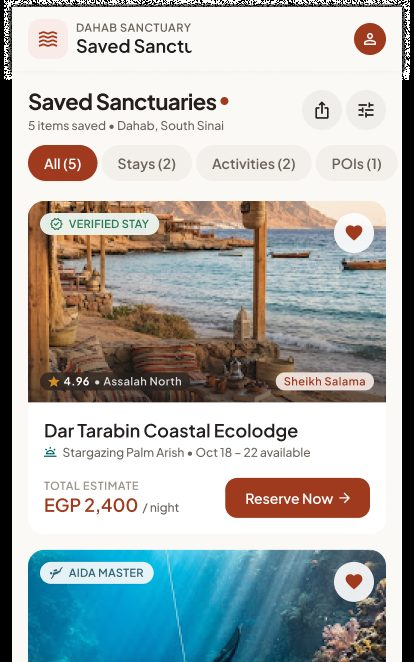
Open in Figma · 42:18401Empty State
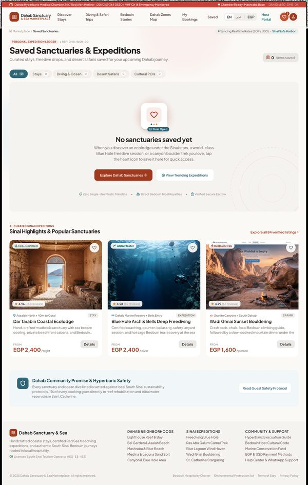
Open in Figma · 42:20777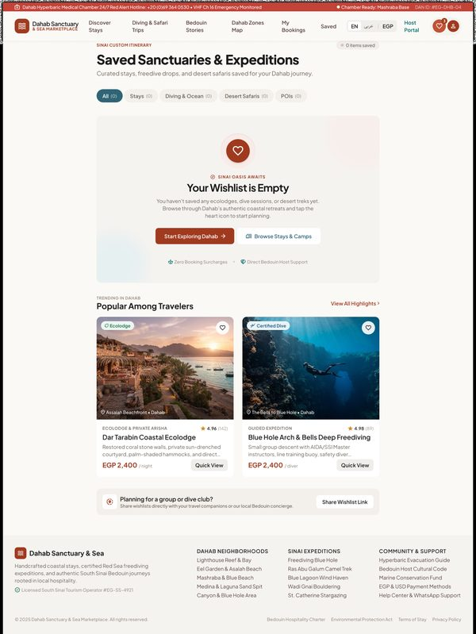
Open in Figma · 42:19854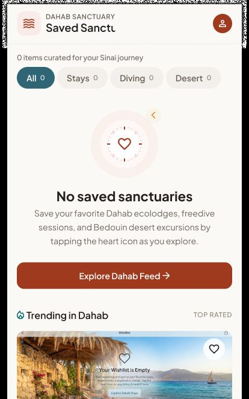
Open in Figma · 42:19175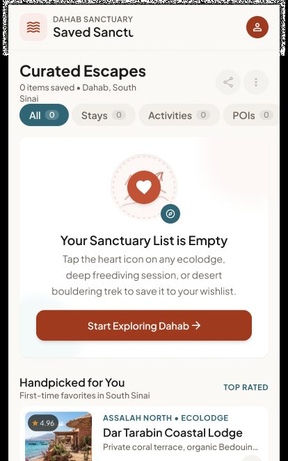
Open in Figma · 42:18703UI elements — default
| Element | Content | Behaviour / rule |
|---|---|---|
| Header & title | "Saved" active in nav + heart icon with count badge; "PERSONAL EXPEDITION LEDGER — Saved Sanctuaries & Expeditions"; "6 Items — Across 3 Sinai Sectors"; summary "6 items saved • 2 Stays • 3 Expeditions • 1 Cultural Point of Interest"; "LIVE INVENTORY SYNCHRONIZED" | — |
| Category filter & tools | Pills All Saved (6) · Ecolodges & Stays (2) · Diving & Ocean (2) · Desert Safaris (1) · Cultural POIs (1) · sort Recently Added · Share · Clear All | Filters list; Share = shareable list link; Clear All asks for confirmation (not designed). |
| Saved cards | Badges, rating, category label, name, 1-line features, availability line ("Available next: Oct 18 – 22 · 4 nights min", "Next open slot: Sat, Oct 18 (2 spots) 08:00 AM", "Departs daily at 15:30 · Pickup included", "Tomorrow 10:00 AM (Wind 18 kts)", "Entry: Free access (Eco-tag required)"), price (EGP 2,400/night · 2,400/diver · 1,950/night · 1,600/person · 1,850/rider · "Free to visit") and actions View / Details + Reserve Stay · Book Session · Book Trek · Book Clinic · Explore Landmark | Card → detail; CTA → booking flow (stay 06 / activity 07); POI → module 04. |
| Remove | Solid terracotta heart on photo | One tap removes (FR-7.2); undo toast recommended (not designed). |
| Collections module | "COLLABORATIVE SINAI ITINERARIES — Create Custom Wishlist Collection… Share live pricing and split deposits with fellow travelers" · New Custom Folder · Export Itinerary PDF | Not in SRS — §7 G2. |
| Top bar edit (native) | "Edit" | Multi-select remove. |
UI elements — empty state
| Element | Content | Behaviour |
|---|---|---|
| Illustration | Bedouin heritage badge | — |
| Copy | "No sanctuaries saved yet — When you discover an ecolodge…, tap the heart icon to save it here for quick access."; counter "0 items saved"; category pills all at 0 | — |
| CTAs | Explore Dahab Sanctuaries → · View Trending Expeditions | Discovery Home (02) / Activity search (03). |
| Suggestions | "Sinai Highlights & Popular Sanctuaries" cards + Explore all 84 verified listings | Heart on these saves directly. |
Step-by-step
| # | Guest does | System does |
|---|---|---|
| 1 | Taps a heart anywhere in the app | Logged-in → saved immediately (heart fills, count +1). Logged-out → Login → then saved. |
| 2 | Opens Saved | Lists saved items (newest first) with live price/availability. |
| 3 | Filters by category | Shows matching items. |
| 4 | Taps filled heart | Removes item; count −1; empty state if none left. |
| 5 | Taps Reserve / Book | Opens the relevant booking flow. |
5. Cross-screen business rules
- Who can review: only the guest of a completed booking (after check-out / activity end), one review per booking (FR-6.1). Review window (e.g. 30 days after completion) — define.
- Reviews labelled "Verified Stay/Diver"; published immediately or after moderation (FR-17.3 moderation is Later → decide default).
- Listing rating = average of overall ratings; category averages shown on detail pages.
- Favourites are per account, synced across web and native; items that become inactive show "No longer available".
- Favourites support stays and activities (FR-7.1); POIs/articles in the design extend this (decide).
6. Story candidates for Jira
Epic: GUEST-ENGAGE — Reviews & Favorites
| Key idea | Story | Acceptance criteria |
|---|---|---|
| REV-1 | As a guest with a completed stay, I want to rate it overall and by category. | Only completed, unreviewed bookings; stars 1–5; required overall. |
| REV-2 | As a guest, I want to write a review with quick tags. | 1,000-char limit, minimum length, tag insertion. |
| REV-3 | As a guest, I want to save my review as a draft. | Draft restored when reopening. |
| REV-4 | As a guest, I want my review to appear on the listing. | Appears in Reviews Expanded with "Verified" label; averages updated. |
| REV-5 | As a guest, I want to be prompted to review after my trip. | Notification + My Bookings "Leave a Review" button (module 09). |
| FAV-1 | As a guest, I want to save a stay/activity with a heart. | Works from all cards and detail pages; login prompt if needed; persists across devices. |
| FAV-2 | As a guest, I want to see my saved items by category. | Category pills with counts; cards link to detail and booking. |
| FAV-3 | As a guest, I want to remove an item from favourites. | Tap filled heart; count updates; empty state when none. |
| FAV-4 | As a guest with no saved items, I want suggestions to start exploring. | Empty state + Start Exploring + trending items. |
7. Gaps, inconsistencies & open questions
| # | Finding | Suggested decision |
|---|---|---|
| G1 | Review photo upload is designed but FR-6.2 is Later. | Hide for MVP or pull FR-6.2 into MVP. |
| G2 | Wishlist collections & group sharing is designed but not in the SRS. | Phase 2 candidate; remove from MVP screens. |
| G3 | Review categories on "Leave a Review" (Hospitality, Cleanliness & Eco-Living, Authenticity, Location & Access, Value & Ethical Accord) ≠ categories on Reviews Expanded (Reef Quality & Cleanliness, Eco-Living & Solar, Bedouin Hospitality, Listing Accuracy, Coordination & Logistics, Value for Conservation). | Define one category list per listing type (stay vs activity). |
| G4 | Leave a Review for activities not designed (activity categories: Instructor Safety, Rig Stability, Equalization Coaching…). | Add activity variant. |
| G5 | Favourites include POIs ("The Bells Drop-off", "Cultural POIs") — SRS FR-7.1 covers properties/activities only. | Decide. |
| G6 | Moderation before publishing — not specified for MVP. | Decide (auto-publish + Report link recommended). |
| G7 | Undo after removing a favourite not designed. | Add toast with Undo. |
| G8 | Reviews are "published following host moderation within 24h" — letting the host moderate reviews of their own property is a conflict of interest; SRS puts moderation with the admin (FR-17.3, Later). | Admin moderation or auto-publish + Report. |
| G9 | Empty-state header still shows a heart badge "3" while 0 items are saved. | Copy/visual fix. |
| G10 | One trending-card image in the empty state is a screenshot of another UI ("Your Wishlist is Empty"). | Replace asset. |
| G11 | Photo size limit differs: 10 MB (review) vs 4 MB (profile photo, module 01). | Define upload limits once. |
| G12 | "Split deposits with fellow travelers" and "Export Itinerary PDF" imply group payments/itineraries — not in the SRS. | Out of MVP. |
8. Out of scope for MVP
- Review photos (FR-6.2), host responses (FR-6.3), AI sentiment moderation (FR-6.4), shared wishlists.